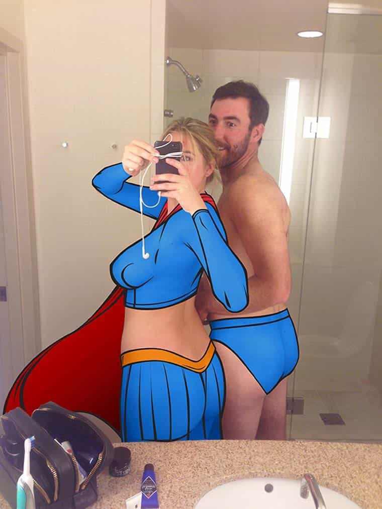

Personal responsibility. There’s a phrase you do not hear much anymore, especially related to women and most especially related to women who take nude photos of themselves that somehow end up online.
Though crimes are inexcusable, we should all make efforts to protect ourselves from people who can (and will) take advantage of us. Just as we would all label a girl a fool for giving out her credit card details online or via SMS, a girl is usually a fool for disseminating highly explicit nude photos of herself. Whether the dissemination by another person is legal or not, individuals need to accept that there are risks to their actions.
Not that common sense like this seems to matter much nowadays. Though I only partially keep abreast of the news back home while I’m in Europe, a recent scandal involving an Australian sportsman and naked photos of a teenage girl caught my attention. The Australian rules footballer, unidentified as of now, was part of the Grand Final-winning Richmond Tigers. This is obvious if you see the 2017 championship medal being worn by the following topless female:
…or the photo of her prancing around with almost no clothes on in front of a Richmond Tigers sign:
The girl has apparently gone to Victoria Police, which serves the city of Melbourne, over claims that the Richmond footballer spread her nude photos until they ended up online. If she wishes to bring in the authorities, that is her right. Yet this doesn’t change the fact that the girl was reckless. The player responsible could be charged and held criminally responsible. Regardless, it should not prevent us from pointing out, “The nudes would not have gotten online if you had taken normal precautions.”
Eerily enough, at least one of these nude photos was taken in a public space. With these kinds of antics by her, it becomes all the more hard not to regard this woman as a total buffoon. Just as she knew she could be spotted in public as she undressed herself on the street and agreed to have a saucy photo taken, she should have known what can happen when someone consensually obtains your nudes, i.e. they fan out across the digital landscape.
“I left the door to my house unlocked and a thief stole things! I’m a victim!”
Burglary is a serious crime, but we still lock our doors to keep intruders out.
You can be the victim of a crime or moral transgression and still have stupidly placed yourself at risk of harm or humiliation. Like the homeowner who leaves their front door unlocked, the girl sending out her nudes or allowing herself to be photographed nude by someone else is always playing with fire.
We can never fully eliminate risk in our lives nor should we try to, given the amount of time it would take each and every day. Notwithstanding this, there is a definite pro tip for staying out of nude photo scandals of the national media or mere college dorm varieties–don’t take nude photos.
It is unfortunate that this teenage girl lives in an age where females are taught that they have virtually no control over eventual consequences. Perhaps she would have taken the nude photos anyway, but I’m betting that the “women are never responsible” mantra drummed into her from preschool or kindergarten exerted a big influence.
The Fappening taught us this years ago

Kate Upton was one of the celebrities caught up in the Fappening.
iCloud and nude photos of female celebrities, what could possibly go wrong? Well, the Fappening, which featured the release of many hundreds, if not thousands of intimate photos of female actresses, singers, and others. Smaller photo scandals have hit Hollywood in particular since, but you can wager that nothing has really been learned by either the people we see on TV all the time or regular women. Better to play a victim than to take self-preserving steps to avoid embarrassment, like keeping nudes off cloud computing or just not taking them at all.
Ironically, Australian rules football players have been the victims of so-called revenge porn as well. Two well-known athletes were “catfished” last year all without making the “poor me” front pages of local newspapers (they seem to have accepted they made a gamble). A less recent story, where jilted teenage girl Kim Duthie falsely said she was pregnant by one player and posted nude photos of multiple men online, read like a manual for female hamstering and having an allergy to personal responsibility.
In your own country, I am sure you can think of male sportsmen or other famous figures who tacitly understand the risks of sharing their nude photos, whereas women who carelessly give out their nudes immediately begin erecting temples for their own victimhood. Whilst I support the sharing of private nudes being illegal, there’s no chance of foul play if nudes aren’t ever created!
Girls will keep their credit cards tucked away in their purses and their bank statements in a locked home to ward off fraudsters, but will snap away incessantly at their titties, asses, and pussies. Go figure.
Read More: Female Danish Athletes Diminish Their Own Championship Victory By Taking Nude Photos